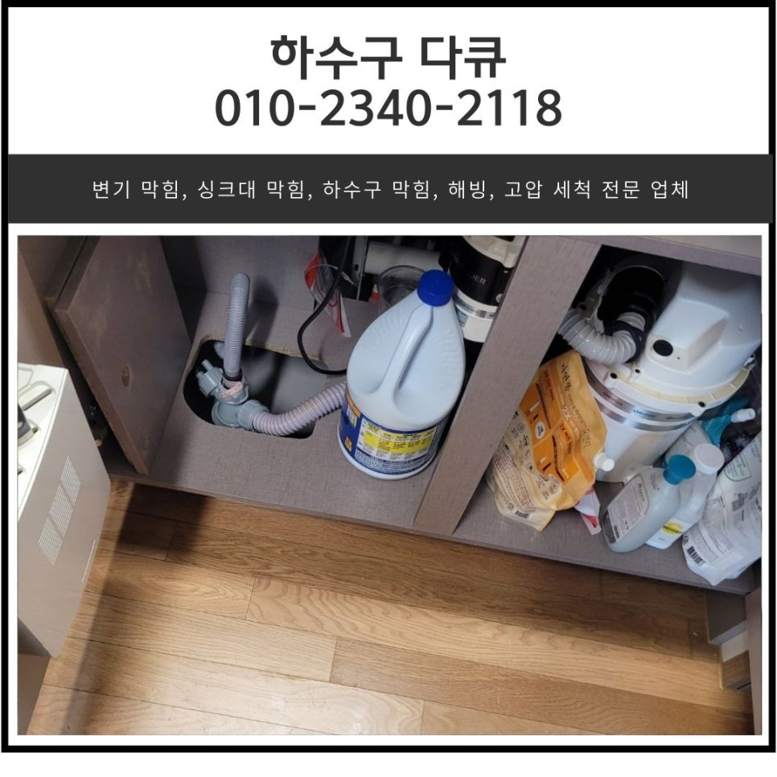
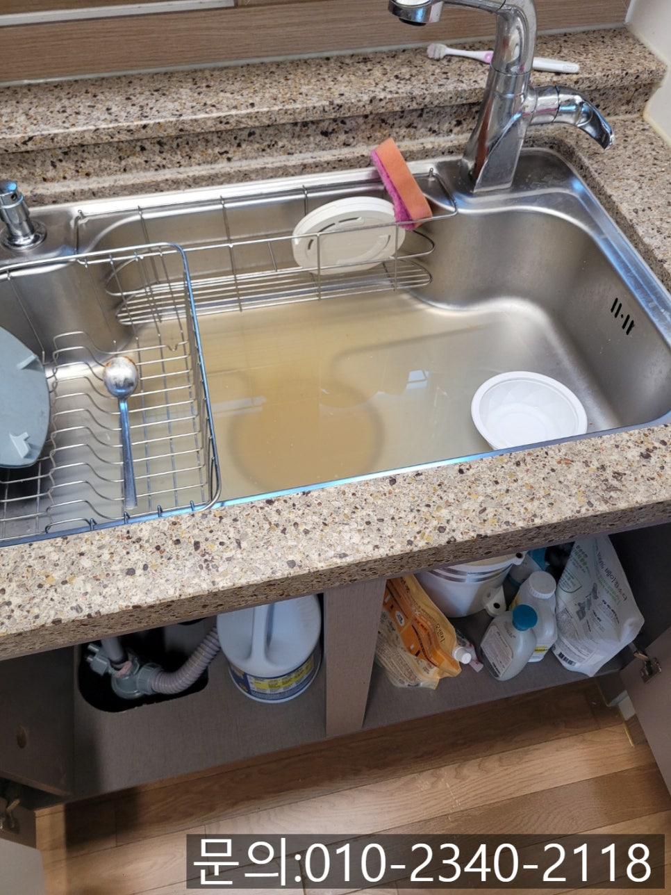
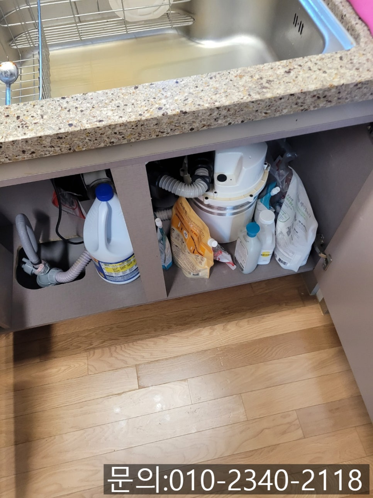
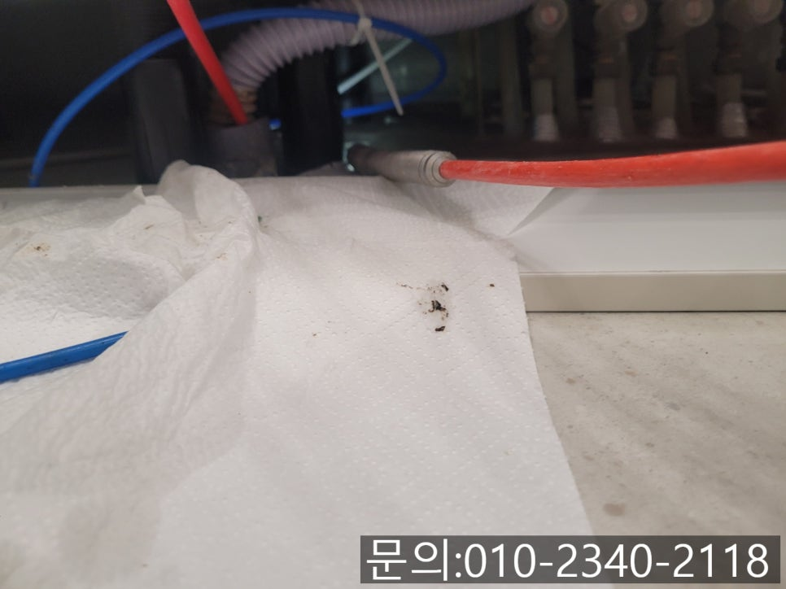
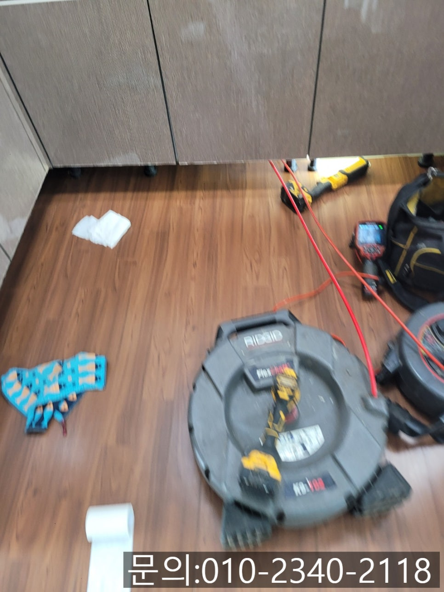
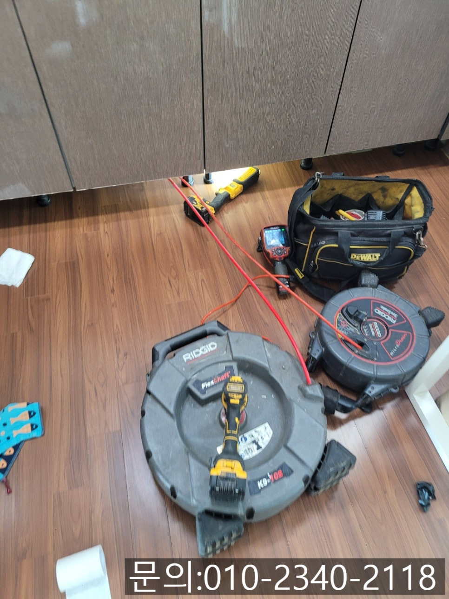
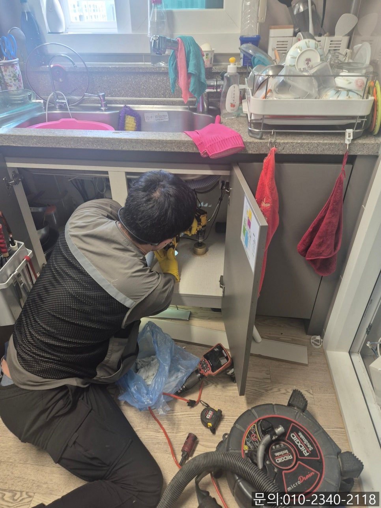

🏠 태평동 싱크대 막힘 위례동 하수구 역류 넘침 뚫는 전문 설비 업체
용인 싱크대막힘 전문 시공 후기

📋 작업 개요
- 위치: 용인
- 서비스 유형: 싱크대막힘, 하수구막힘, 배관막힘, 역류해결, 뚫는업체
- 작업 일시: 2025. 4. 12. 16:12
- 업체명: 하수구수사대 (010-5615-2118)
🔍 문제 상황
안녕하세요.
태평동 싱크대 막힘, 위례동 하수구 역류 넘침, 뚫는 전문 설비 업체 하수구 다큐입니다.
태평동 싱크대 막힘의 경우 배관 내부 문제점을 눈으로 직접 확인할 수 없다 보니 문제를 미리 알아챌 수 없습니다.
싱크대를 사용할 때 물이 잘 내려가지 않는다거나, 거꾸로 물이 역류해 올라오는 등 평소와 다른 문제가 나타나야 배관 내부에 문제가 발생했음을 감지할 수 있어요.
주방 배관에서 이상함을 감지했을 때 마트나 다이소에서 쉽게 구할 수 있는 세정제나 약품으로 막힘이 해결되지 않는다고 섣부르게 막히는 곳을 건드리거나 싱크대를 분리하려고 시도하시면 일을 더 악화시킬 수 있습니다.
그렇기 때문에 하수구 전문가의 도움을 받아 해결하시는 게 가장 현명한 방법이에요.

🔎 원인 분석
💡 전문가 진단: 정밀 진단 장비를 사용하여 슬러지의 고착 여부를 판명하고 타격/세척 작업을 실시했습니다.
이번에는 태평동 싱크대 막힘으로 연락을 받고 다녀온 가정집 사례를 통해 문제를 해결하는 과정을 설명해 드리겠습니다.
지난달부터 싱크대 물이 천천히 내려가는 것을 느끼셨는데요. 예전에도 비슷한 경험이 있었지만 며칠 지나고 괜찮아졌던 터라 대수롭지 않게 생각하셨다고 해요.
하지만 주방을 사용할수록 물이 흘러내려 가는 속도가 점점 더 느려지는 것 같고 악취도 심해지는 것 같아 직접 뚫어보려고 다양한 방법을 시도해 보셨지만 힘만 들고 달라지는 것이 없다 보니 위례동 하수구 역류 넘침 뚫는 전문 설비 업체 하수구 다큐로 연락을 주셨습니다.
고객님의 전화를 받고 장비를 챙겨 현장으로 다려가 보니 싱크대에 역류가 발생하고 있는 상태였습니다.
고객님께서는 직접 뚫어보기 위해 여러 가지 방법을 사용했는데 왜 더 나빠지는 게 뭘 잘못한 건지 모르겠다며, 이렇게 역류하는 것도 해결할 수 있는지 물어보셨어요.
하수구 전문 장비가 없다면 이런 상황을 해결하기 어렵겠지만 위례동 하수구 역류, 넘침 뚫는 전문 설비 업체 하수구 다큐의 경우 각종 장비를 모두 구비하고 있어 상황에 맞는 장비를 이용해 해결해드릴 수 있으니 걱정 마시라고 안심시켜드린 다음 원인을 파악해 보기로 했습니다.

🔧 작업 과정
우선 석션을 사용해 싱크대에 역류해있는 물을 모두 제거해 준 다음 내시경 카메라를 배관 내부로 진입시켜 어떤 이유로 막힘이 발생한 건지 확인해 보기로 했어요.
내시경 카메라가 내부로 진입하자 기름 슬러지가 배관을 꽉 막고 있는 상태로 주방에서 사용한 물이 역류할 수밖에 없는 상태였습니다.
고객님께 배관의 상태에 대해 설명해 드린 다음 기름 슬러지를 제거하는 작업을 진행하기로 했습니다.
현장에서 이물질을 제거하게 될 장비는 플렉스 샤프트에요.
플렉스 샤프트 장비는 노즐 끝에 달린 체인이 배관 내부에 진입해 회전하면서 배관을 막고 있는 이물질을 잘게 부서 주는 역할을 하게 됩니다.
몇 차례 작업을 진행하자 기름 슬러지가 제거되고 조금씩 배관이 모습을 들어내기 시작하는데요.
아직도 기름 슬러지가 많이 남아있어 내시경 카메라로 이물질의 위치를 파악하면서 추가 작업을 진행했습니다.
플렉스 샤프트로 이물질을 타격해 잘게 부서 주는 작업을 수차례 반복하자 이물질이 모두 제거되고 깨끗해진 배관을 확인할 수 있었어요.
지켜보시던 고객님도 그 많던 이물질이 다 어디로 간 거냐며 깨끗해진 배관을 보시고는 신기해하셨습니다.


✅ 작업 완료
싱크대 막힘이 발생했을 때 인터넷을 검색해 보면 다양한 해결 방법들이 나와있어요.
직접 해결할 수 있다면 정말 좋겠지만 전문적인 장비 없이 기름 슬러지를 제거하는 것은 어려운 일입니다.
혹시 지금 싱크대 막힘으로 고민하고 계신다면 전문 설비업체 하수구 다큐로 연락 주세요.




⚠️ 주방 싱크대 배관 막힘 예방 수칙
- ✅ 기름기가 묻은 식기나 프라이팬은 설거지 전 키친타올로 반드시 기름때를 닦아내세요.
- ✅ 주기적으로 싱크대 개수대에 뜨거운 물을 가득 받아 한 번에 내려 배관 내부 기름을 씻어내세요.
- ✅ 배수구 거름망을 미세한 필터로 사용하시고 음식물 찌꺼기가 틈으로 새어 들지 않게 관리하세요.
- ✅ 베이킹소다와 식초를 뜨거운 물과 함께 일주일에 한 번씩 부어주면 배관 살균과 막힘 예방에 좋습니다.
💡 핵심 정리
- 확실한 장비 작업(내시경 점검 및 샤프트 스케일링)으로 원인을 뿌리 뽑습니다.
- 작업 후 1년 이내에 동일한 부위 재발 시 100% 무상 A/S 서비스를 보장합니다.
- 서울 · 경기 · 인천 전 지역에 24시간 언제든 긴급 출동할 수 있도록 항시 대기 중입니다.
❓ 자주 묻는 질문 (FAQ)
🚨 용인 싱크대막힘 문제로 고민이신가요?
정확한 원인 진단과 확실한 시공으로 재발 없는 해결을 약속드립니다.
24시간 긴급 출동 | 서울 · 경기 · 인천 전지역 | 1년 내 재발 시 무상 A/S